The other articles on the curiango data (Piatti et al.,
2026) treat each site-night as an independent site. A recorder that
picked up the Common Pauraque last night is then no more likely to pick
it up tonight than one that has been silent for a month.
fp_occu_dyn() drops that assumption. It fits the dynamic
occupancy model (MacKenzie et al., 2003) with the false positives of the
multiple-methods design (Miller et al., 2013), with the nights of each
site as seasons. This article fits it to the curiango data,
compares it with the model of independent site-nights by blocked
cross-validation, reports how it behaved in simulations, and applies it
to a second data set.
The model
Each site i is in use (z_{it} = 1) or not (z_{it} = 0) on night t. On the first night, \Pr(z_{i1} = 1) = \psi_1. On every later night, the state follows a Markov chain:
\Pr(z_{it} = 1 \mid z_{i,t-1} = 0) = \gamma_{it}, \qquad \Pr(z_{it} = 0 \mid z_{i,t-1} = 1) = \epsilon_{it},
where the colonization \gamma_{it}
and the extinction \epsilon_{it} have
logit-linear predictors (col and ext). Within
a night, the observation model is that of fp_occu(): true
detections with probability p_{11} on
nights in use, false positives with probability p_{10} on every night, and verified
recordings that settle what was recorded. The states are summed out by
the forward algorithm, so the model has no latent discrete parameters
for Stan to sample.
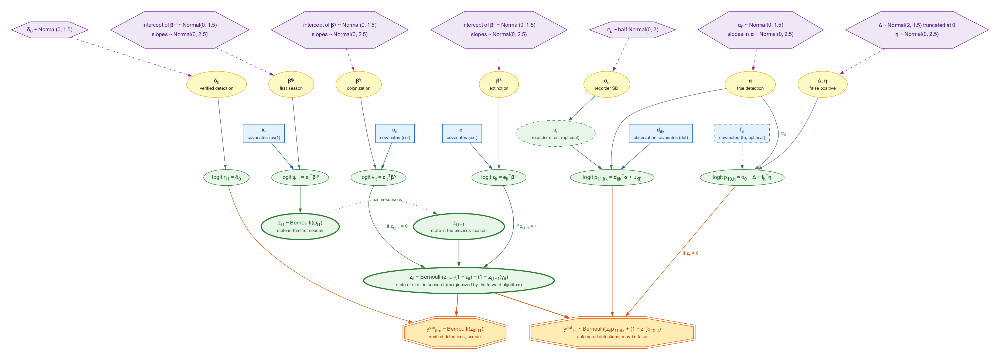
Directed acyclic graph of the model fitted by
fp_occu_dyn(). Hexagons are priors (defaults of
fp_priors()), yellow ellipses are parameters, blue boxes
are covariates, green ellipses are latent quantities and linear
predictors, and octagons are the observed data. Dashed outlines mark
optional components. The false-positive coefficients are called eta here
because gamma is colonization. The options markov,
random_det and random_fp are not drawn.
With nights as seasons, “occupancy” means use of the site on a given night. Colonization is the start of use after a night without it, and extinction is the end of use after a night with it. Neither is a change in the population of the site.
fp_data(season = ) takes the column of the night. When
the seasons are dates, it fills in the dates without data, so that every
transition spans one night. A site without data on a night contributes
to that night only through the transitions. In curiango,
the nights run from 25 November 2023 to 26 February 2025, with between 1
and 7 of the seven sites recorded on each night.
Fitting
The colonization and the extinction depend on the temperature and
relative humidity of the night. Transitions into nights without data
need these covariates too, so we use the mean over the sites recorded on
each date (temp_d, rh_d), passed as season
covariates. Every date has at least one site recorded. Detection depends
on the soundscape indices of each minute, and the false-positive rate on
the temperature and humidity at the site that night.
zs <- function(v) as.numeric(scale(v))
m <- curiango$minutes
nt <- curiango$nights
daily <- aggregate(cbind(temp, rh) ~ night, nt, mean)
daily <- data.frame(night = daily$night, temp_d = zs(daily$temp), rh_d = zs(daily$rh))
i <- match(m$site_night, nt$site_night)
auto <- data.frame(site = m$site, night = nt$night[i], time = m$time,
y = as.integer(m$conf_custom >= 0.40),
bio = zs(m$bio), aci = zs(m$aci),
temp = zs(nt$temp[i]), rh = zs(nt$rh[i]), recorder = m$site)
ver <- data.frame(site = curiango$verified$site,
night = nt$night[match(curiango$verified$site_night, nt$site_night)],
y = curiango$verified$y)
d <- fp_data(auto, data.frame(site = unique(auto$site)), ver, site = "site",
recorder = "recorder", season = "night", season_covs = daily)
fit <- fp_occu_dyn(d, psi1 = ~ 1, col = ~ temp_d + rh_d, ext = ~ temp_d + rh_d,
det = ~ bio + aci, fp = ~ temp + rh, threads_per_chain = 2)The fit took about 38 minutes with four chains of two threads. It converged: the largest R-hat was 1.006, the smallest bulk effective sample size 1051, with 0 divergent transitions.
Results
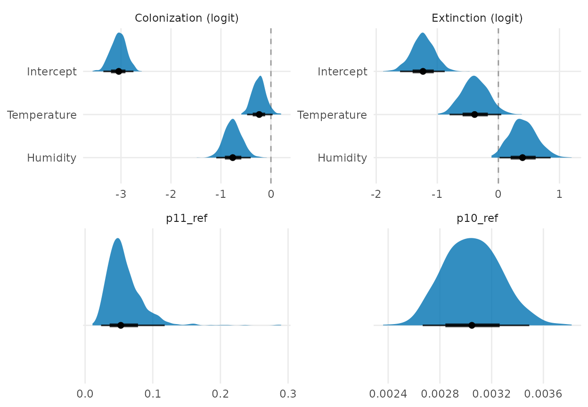
Posterior distributions of the parameters of curiango, from
1,000 draws. Points are medians, and the thick and thin bars are the 66%
and 95% intervals. Coefficients are on the logit scale, and the dashed
line marks zero.
On a night of average temperature and humidity, a site not in use starts being used with probability 0.045. A site in use stops with probability 0.23, so a spell of use lasts about 4.4 nights on average. Humid nights start fewer spells: the humidity coefficient of colonization is -0.76 (-1.10 to -0.39). Its coefficient of extinction, 0.41 (-0.01 to 0.86), points to humid nights also ending spells, but its interval reaches zero. The intervals of both temperature coefficients include zero.
A minute of a night in use yields a true detection with probability 0.059 (0.025 to 0.125) at the reference values. A minute yields a false positive with probability 0.0031 (0.0026 to 0.0035).
The model also estimates, for each night, the fraction of the seven
sites in use (psi_fs, from the states sampled given all the
data). On nights when a site was not recorded, its state is inferred
from the nights around it.
fs <- res$summary[grepl("^psi_fs\\[", res$summary$variable), ]
fs$night <- as.Date(fs$season)
ggplot2::ggplot(fs, ggplot2::aes(night, mean)) +
ggplot2::geom_ribbon(ggplot2::aes(ymin = lower, ymax = upper), fill = "#2DE2E6",
alpha = 0.4) +
ggplot2::geom_line(linewidth = 0.3) +
ggplot2::labs(x = NULL, y = "Fraction of sites in use") +
ggplot2::theme_minimal()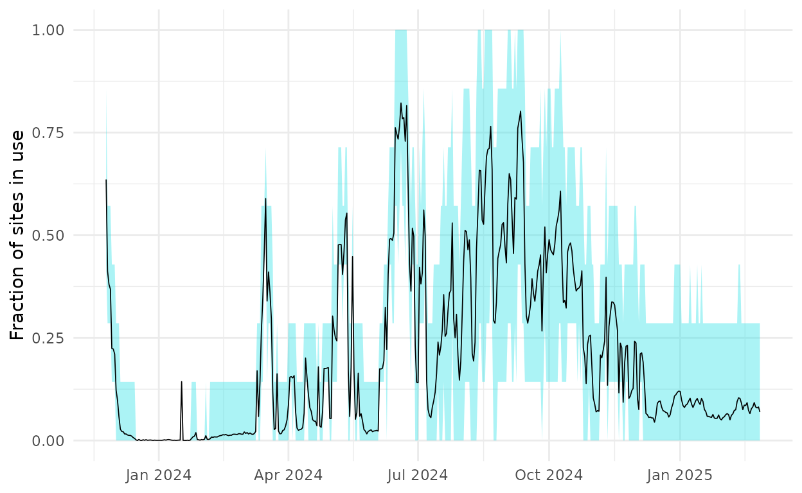
Fraction of the seven sites in use on each night (posterior mean and 95% interval of psi_fs).
fp_sites() gives, for each site and night, the
probability that the site was in use given all its data:
s <- res$sites
rec <- paste(s$site, s$night) %in% paste(curiango$nights$site, curiango$nights$night)
s$recorded <- ifelse(rec, "recorded", "not recorded")
ggplot2::ggplot(s, ggplot2::aes(as.Date(night), site, fill = occupied, alpha = recorded)) +
ggplot2::geom_tile() +
ggplot2::scale_fill_viridis_c(limits = c(0, 1)) +
ggplot2::scale_alpha_manual(values = c(recorded = 1, "not recorded" = 0.35)) +
ggplot2::labs(x = NULL, y = NULL, fill = "Pr(in use)", alpha = NULL) +
ggplot2::theme_minimal()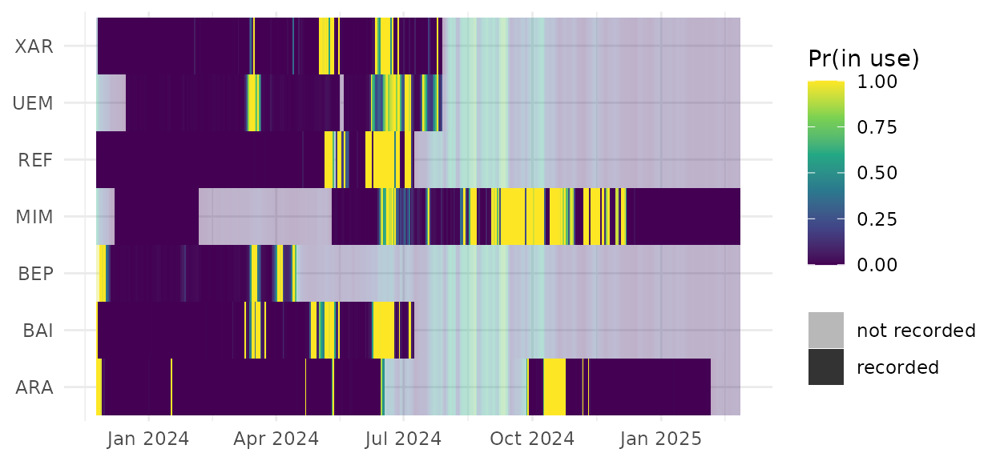
Probability that each site was in use on each night given all the data. Nights without recordings at a site are paler.
Posterior predictive check
The posterior predictive check compares the detections of each
site-night with those replicated from the fit. It gives p = 0: the
observed discrepancy (median 568) exceeds the replicated one (median
384) on every draw. The model of independent site-nights fails this
check by a similar margin (vignette("markov")). The misfit
therefore lies within nights, where the minutes are taken as
independent, and not in the dynamics across nights.
fp_occu_dyn(markov = ) adds the Markov term of
vignette("markov") for runs of detections within a night.
The next section compares it by cross-validation.
Comparison with independent site-nights
LOO cannot compare the two models here. The log-likelihood of
fp_occu_dyn() has one value per site, because the nights of
a site are not independent. With seven sites, leaving one out would
remove a seventh of the data at a time.
Instead, we cross-validated on blocks of nights. The dates were cut
into weeks, and the weeks were dealt at random into ten folds, the same
for every site. The first and the last week stayed in every training
set, so that every fit spans the same nights. Each model was fitted ten
times, each time without one fold. For the dynamic model, the left-out
nights became nights without data, whose states are predicted from the
neighbouring nights. The model of independent site-nights used the same
detection, false-positive and recorder terms, with
occ ~ temp_d + rh_d. The score of each site and fold is the
log of the posterior predictive density of its left-out minutes and
verified recordings (elpd).
The comparison has five models. dyn is the fit above and
ind the model of independent site-nights.
dyn_mk and ind_mk add
markov = "time". ind_rd adds
random_det to ind, a detection effect for each
site-night, which competes with the dynamics for the variation between
nights.
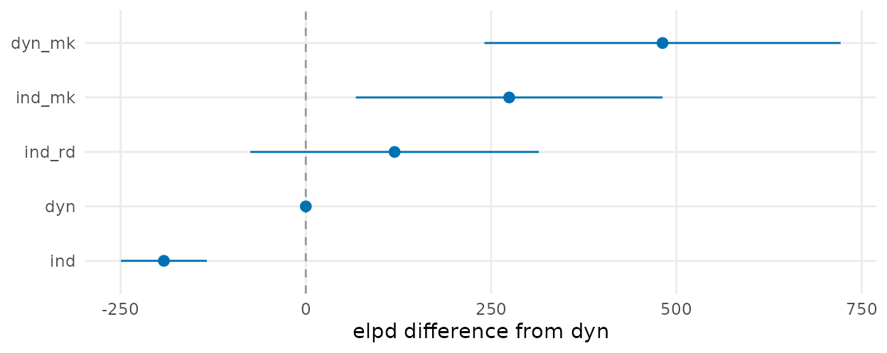
Difference in elpd from dyn in the blocked
cross-validation. Bars are two standard errors of the difference, and
dyn itself has none.
The dynamic model predicts the left-out nights better than the
independent one, by 191.5 (SE 29.0) in elpd over 69 site and fold units.
The same holds with the Markov term, by 206.9 (SE 33.4). The Markov term
itself gains more than the dynamics: 465.9 (SE 114.9) over
ind. The two gains add up, and dyn_mk has the
highest elpd in all ten folds and at all seven sites:
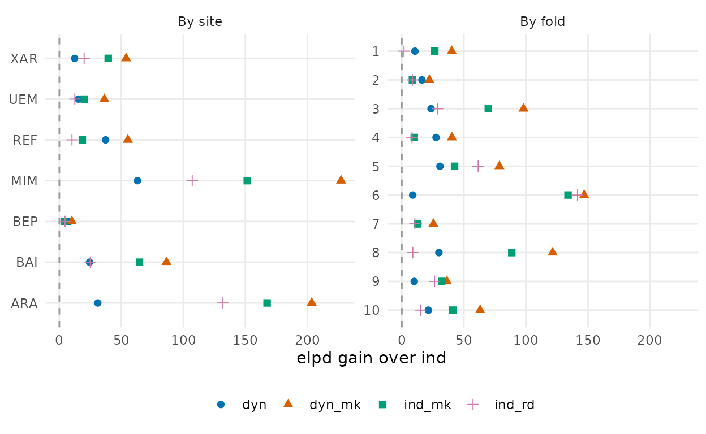
Gain in elpd over ind at each site and in each fold.
Positive values favour the model over independent site-nights.
random_det also improves on ind, by 311.3
(SE 100.1), but less than the Markov term does. Runs of detections,
then, explain more of these data than differences between nights
alone.
Three caveats apply. The SE treats the site and fold units as
independent, although the units of a fold share a training fit, so it is
likely too small. Each left-out week has nights in the training data on
both sides, so the dynamic model interpolates as well as forecasts. And
the elpd of ind_rd comes from 400 posterior draws, because
integrating its effects is slow, against 4,000 for the other models. All
50 training fits converged; one fit of the independent model was rerun
with another seed after a chain stuck in a second mode (see
dev/dyn-kfold/README.md in the source repository).
Validation in simulation
We simulated data with simulate_fp_dyn() and fitted the
model to them, in 6,320 tasks, with none ending in error. The criteria
were set before the results, and the tables are in
dev/dyn-val/ in the source repository. All the designs had
100 sites.
With p11 of at least 0.30 and at least 10% of site-seasons verified,
the model was well calibrated. Coverage of the 95% intervals of initial
occupancy, colonization, extinction, p10_bar and
psi_fs was at least 0.90, and the absolute bias was at most
0.024. Observation-confirmation, with 10% or 30% of occasions confirmed,
met the same thresholds. Simulation-based calibration found no departure
from uniform ranks in 1,000 replicates.
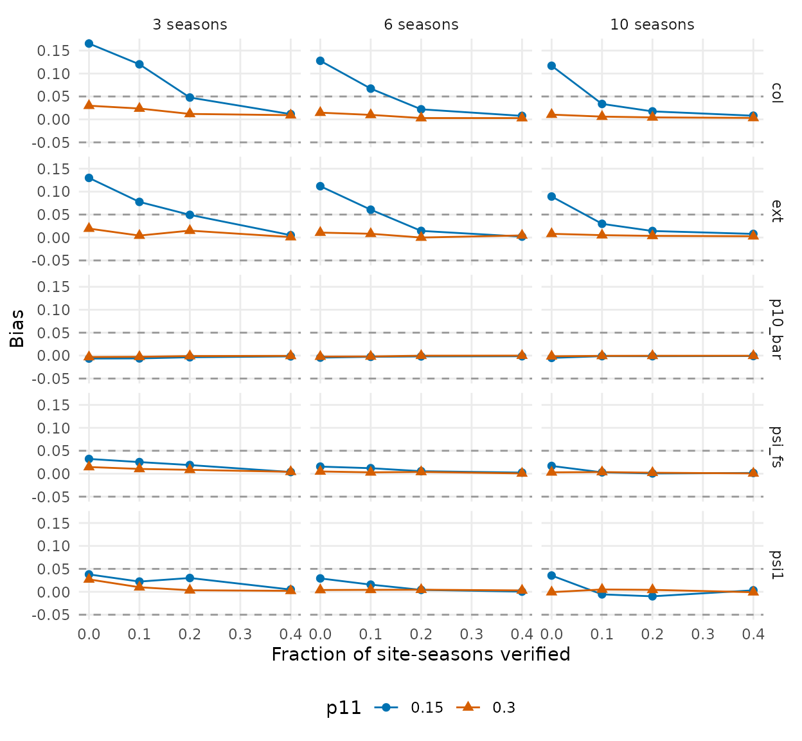
Bias of the posterior mean in the designs with low detection, by the fraction of site-seasons verified. Dashed lines mark the threshold of 0.05.
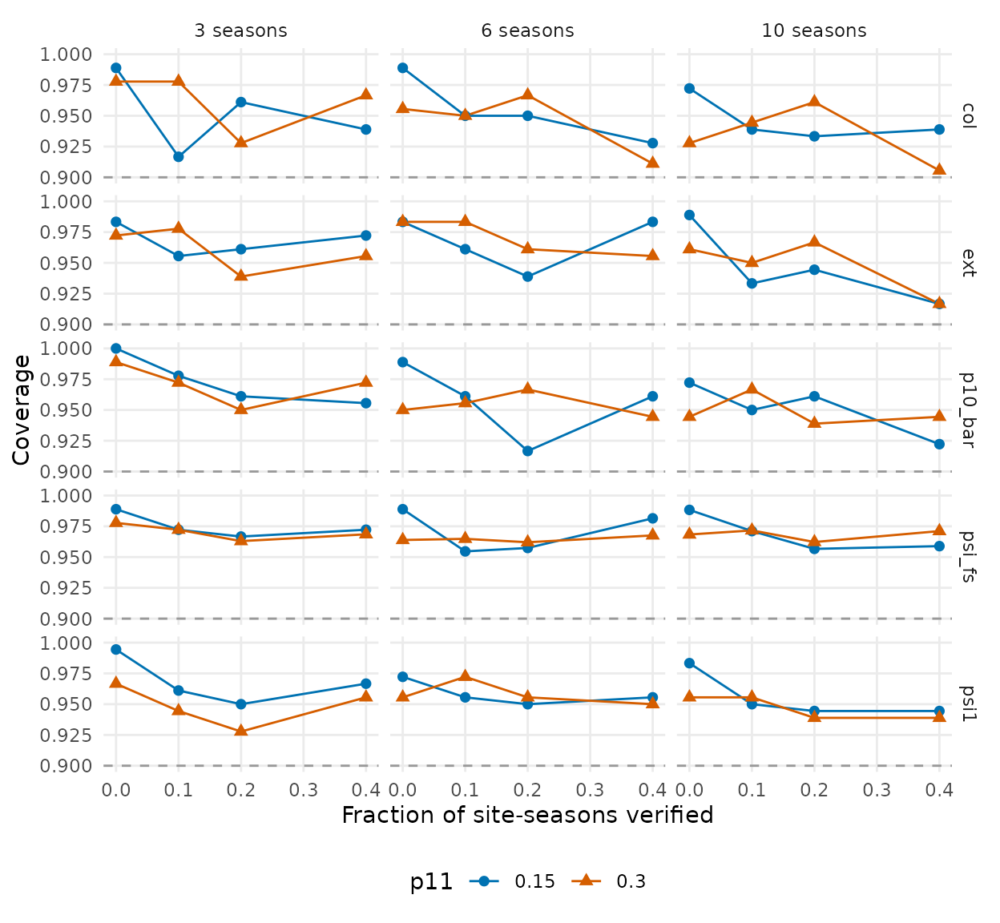
Coverage of the 95% intervals in the same designs. The dashed line marks the threshold of 0.90.
The limits lie at low detection with little verification:
- With p11 = 0.15 and no verification, colonization was biased upwards by 0.12 to 0.17 and extinction by 0.09 to 0.13, and up to 40% of fits did not converge.
- With p11 = 0.15 and 10% verified, both biases stayed above 0.05 with 3 or 6 seasons, and fell below it with 10 seasons.
- With p11 = 0.15 and 20% or more verified, the thresholds were met.
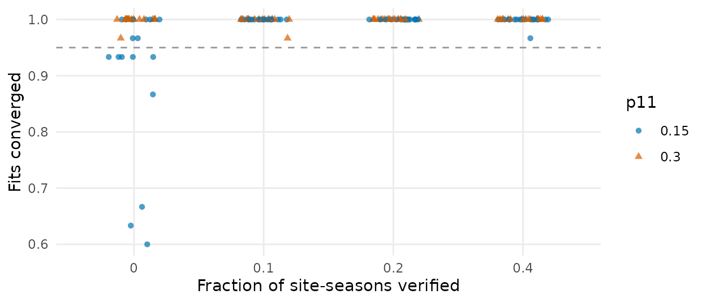
Fraction of the fits of each design cell with R-hat below 1.01. Each point is a cell, and the dashed line marks the threshold of 0.95.
Ignoring a source of variation was costly. When false positives
varied with a covariate, fp ~ 1 kept psi_fs
nearly unbiased (at most 0.018), but the coverage of
p10_bar fell to between 0.72 and 0.89. When site effects on
detection had an SD of 1, leaving out random_det gave a
bias of -0.10 in psi_fs and a coverage of 0.01. With runs
of detections of strength 2 on the logit scale, leaving out
markov gave a coverage of 0.44 for psi_fs.
With the option on, both models recovered these quantities, with a
coverage of at least 0.90 for sd_det_site and
det_y_prev.
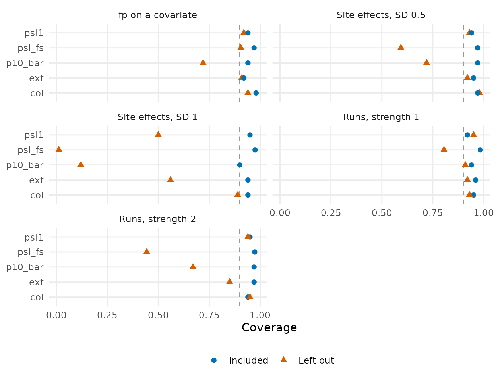
Coverage of the 95% intervals when the data have a source of variation and the model leaves it out or includes it. The dashed line marks the threshold of 0.90. False positives on a covariate are shown for the design with 20% of site-seasons verified.
With strong site effects, random_det needed longer
chains. With an SD of 1 and 1,000 + 1,000 iterations, 93% of fits
reached R-hat below 1.01. With 2,000 + 2,000 iterations on the same
data, 99% did, and the estimates did not change.
A second data set
We also fitted the model to surveys of the American pika
(Ochotona princeps) by Goldman et al. (2023), with 771 plots in
five park units from 2010 to 2021. Years are the seasons, and 2015 and
2016 are seasons without data. Each survey gives one occasion for each
ambiguous sign (fresh scat, fresh haypile, call), with the sign as a
covariate of det and fp. Sightings and
unambiguous fresh scat form the verified method. Unlike the article,
this model does not give each sign its own detection process.
The dynamic model has psi1 ~ park, with constant
colonization and extinction. The independent model treats each plot-year
as a site, with occ ~ park + year. All five fits had no
divergent transitions, R-hat of at most 1.004, and a bulk effective
sample size of at least 1109.
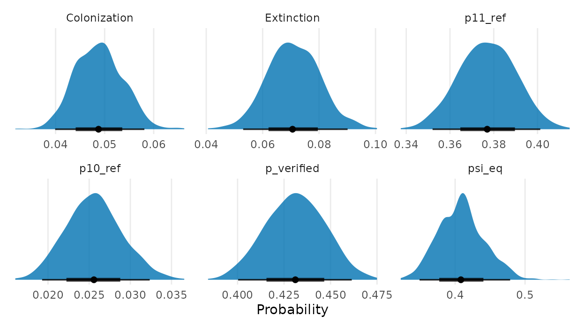
Posterior distributions of the rates of the pika model, from 1,000
draws. psi_eq is the occupancy implied by colonization and
extinction at equilibrium.
Colonization was 0.048 (0.040 to 0.059) and extinction 0.071 (0.053 to 0.090) per year. Occupancy at equilibrium was 0.41 (0.35 to 0.48). A call, the reference sign, was recorded on a survey of an occupied plot with probability 0.38 (0.35 to 0.40), and on a survey of an unoccupied plot with probability 0.026 (0.019 to 0.033). Goldman et al. (2023) report about 0.06 for both colonization and extinction with a different model, so the comparison is only of order of magnitude.
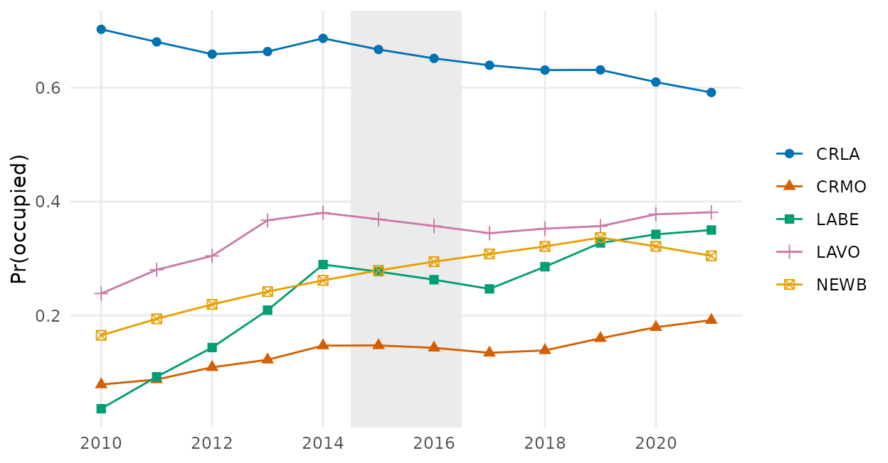
Mean probability that the plots of each park unit were occupied in each year, given all the data. The shaded years have no surveys, so their states come from the years around them.
Occupancy moved towards the equilibrium in most park units. Colonization and extinction are constant and shared in this model, so that movement is built in. It is not evidence of a trend in any park unit.
The posterior predictive checks gave p = 0.78 for the automated
method and p = 0.16 for the verified one, so the misfit seen on
curiango did not appear here. The independent model gave p
= 0.21 for the automated method.
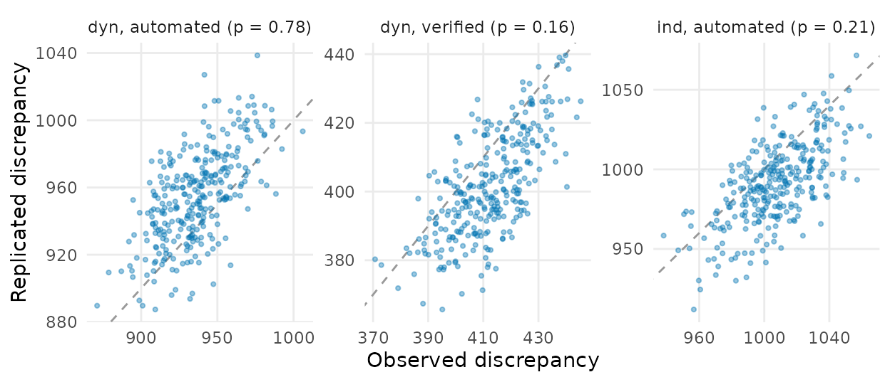
Posterior predictive checks of the pika models. Each point is a draw, and points on the line have equal observed and replicated discrepancies.
Prior means of 1 to 3 for fp_gap, and a doubled prior
SD, left the estimates nearly unchanged.
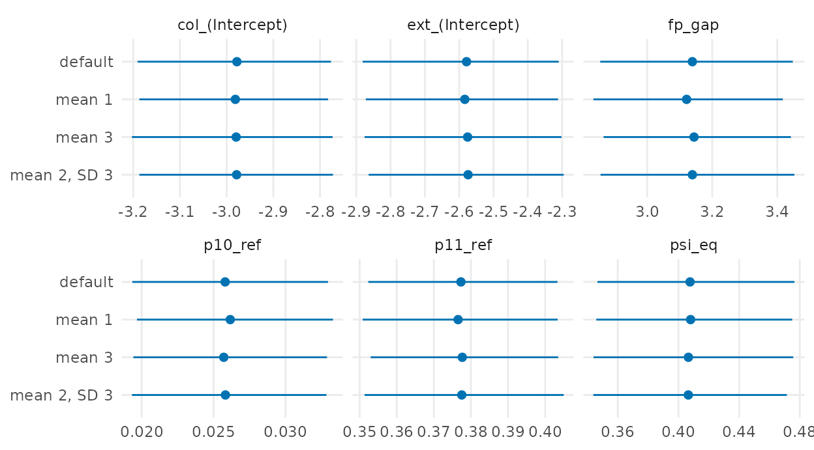
Posterior means and 95% intervals of the pika model under four priors of
fp_gap, on the scale of each parameter.
Leaving out whole plots, PSIS-LOO favoured the dynamic model over
independent plot-years by 178.7 (SE 42.6) in elpd, with no Pareto k
above 0.7. With 771 plots, leaving one out removes little of the data,
which is why LOO works here and not on the seven sites of
curiango.
Two simplifications matter. The verified occasion shares its survey
with the automated ones, and unambiguous scat is a subset of fresh scat,
so the two methods are not fully independent given the state. The sign
also enters det and fp as a covariate, whereas
the article gives each sign its own model.
The script and data are in dev/dyn-pika/ in the source
repository.
When to use it
- With repeated nights or visits at the same sites, use on one night is informative about the next, and the dynamic model uses that information.
- Each season needs covariates for the transitions into it, including seasons without data. Choose covariates that exist on every night.
- Compare with the independent model on blocks of seasons, not by LOO, whenever the sites are few.
- Verify recordings in at least 10% of site-seasons, and more when detection is low. Without verification, colonization and extinction are biased at low detection.
- Runs of detections are common in passive acoustic monitoring, where
occasions are minutes close in time. Check for them and consider
markov. -
fp_calibrate()simulates only single-season designs, so it does not plan a dynamic study;simulate_fp_dyn()is the starting point for that.
References
Goldman, M. R., Shinderman, M., Jeffress, M. R., Rodhouse, T. J., & Shoemaker, K. T. (2023). Integrating multiple sign types to improve occupancy estimation for inconspicuous species. Ecology and Evolution, 13(5), e10019. https://doi.org/10.1002/ece3.10019
MacKenzie, D. I., Nichols, J. D., Hines, J. E., Knutson, M. G., & Franklin, A. B. (2003). Estimating site occupancy, colonization, and local extinction when a species is detected imperfectly. Ecology, 84(8), 2200–2207. https://doi.org/10.1890/02-3090
Miller, D. A. W., Nichols, J. D., Gude, J. A., Rich, L. N., Podruzny, K. M., Hines, J. E., & Mitchell, M. S. (2013). Determining occurrence dynamics when false positives occur: Estimating the range dynamics of wolves from public survey data. PLoS ONE, 8(6), e65808. https://doi.org/10.1371/journal.pone.0065808
Piatti, L., de Sousa, D. L. H., Oliveira, B. S., de Melo, A. V., Sugai, L. S. M., & Provete, D. B. (2026). Methodological choices influence ecological inference in passive acoustic monitoring of a Neotropical nightjar. Journal of Avian Biology, in press.